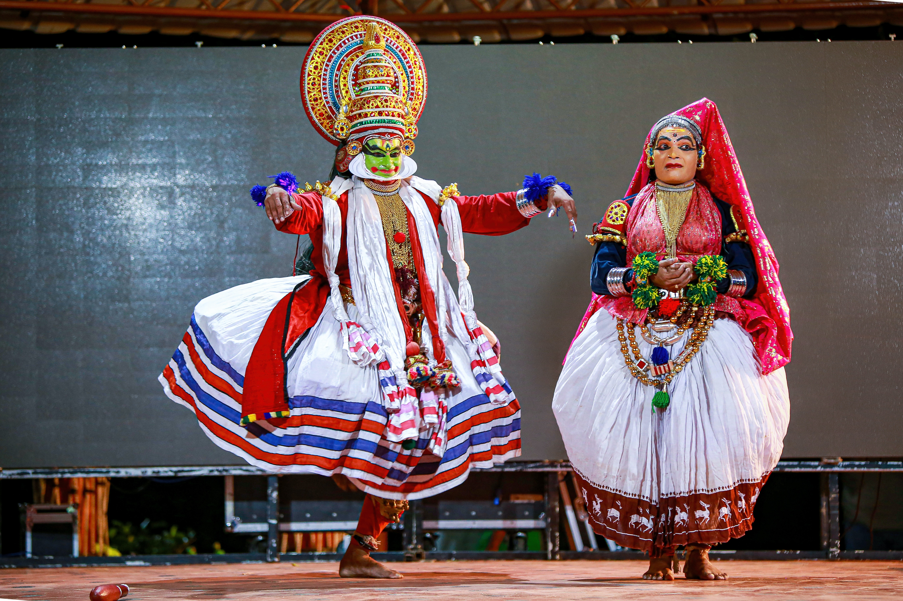

About kerala Tourism:
Kerala is a state in the southwestern region of India and is often referred to as "God's Own Country" due to its stunning natural beauty. Kerala is known for its palm-lined beaches, backwaters, hill stations, and lush greenery. Kerala's unique culture, delicious cuisine, and warm hospitality also make it a popular tourist destination.